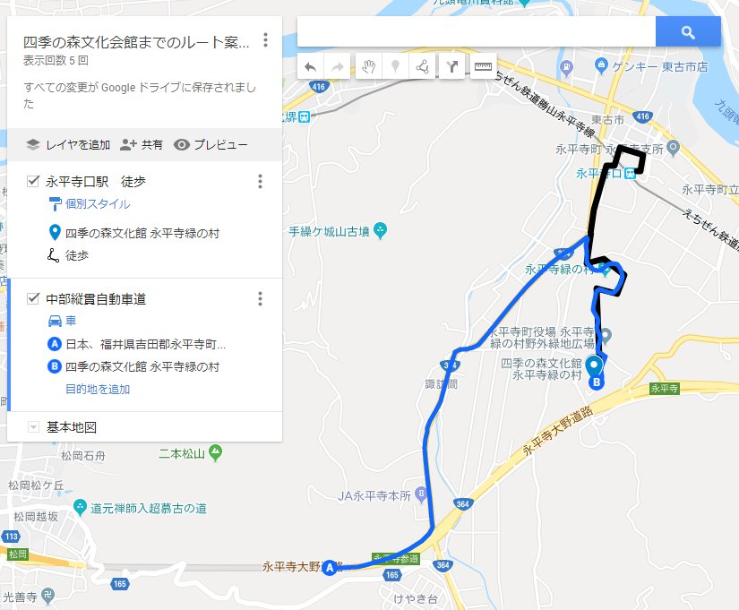
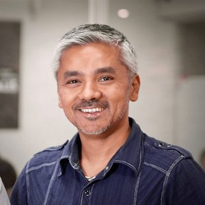
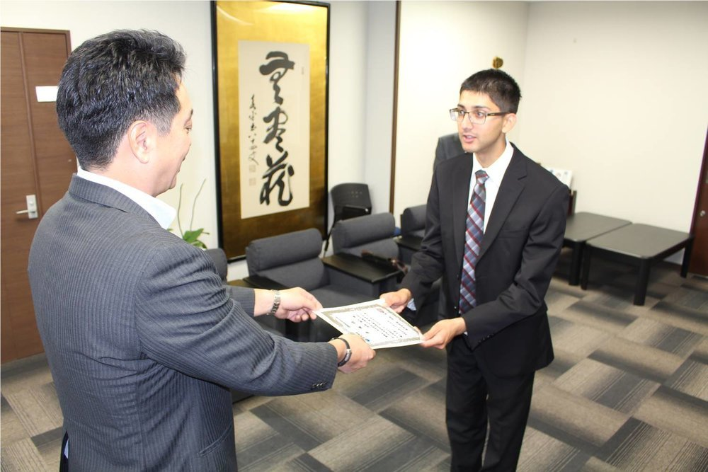

2018年12月2日（日）：禅Ｘプログラミング基礎ワークショップ（初心者向け）
Sunday, December 2, 2018
1:00 PM - 4:00 PM
禅の里永平寺町で、禅の心を意識しながら、シリコンバレースタイルのプログラミングを一緒に体験しませんか。今回のワークショップではJavaScriptの基礎を身につけて、プログラマーへの第一歩を一緒に踏み出しましょう！
日時
2018年12月2日（日）午後1時～午後4時
場所
永平寺緑の村四季の森文化館、福井県吉田郡永平寺町山9号1番地2

概要
コーディング・プログラミングにご興味がある方向けに、導入・基礎をお教えします。例えば、Javascriptにおけるデータ型について、何故それが重要なのか、など。
具体的には以下をお教えします：
ー基本的なデータ型
ー演算子（オペレーター）と式（エキスプレッション）
ー関数
対象
10歳～60歳 （12名）（15歳未満はご両親と一緒に来てください）
完全な初心者向けですので是非いらしてみてください！
費用
無料です！
持ち物
1. ノートパソコン（WiFi機能付き）
2. VSコード（事前にこちらのリンクからダウンロードください）：
https://code.visualstudio.com/
3. グーグルクローム（事前にこちらのリンクからダウンロードください）：
https://www.google.com/chrome/
申し込み
https://www.facebook.com/events/530791794061457
https://www.meetup.com/CodeChrysalis/events/256460964/
または
連絡先
カンザダあみる
勧めの宿泊
先生
カニ・ムニダサ
共同設立者＆CEO
Code Chrysalisに就任する前は、Pivotal Labsの戦略と実務のシニアエグゼクティブとして、業界の先駆者達に向けて、ソフトウェアの構築、ビジネスのイノベーション、課題解決を行う上でのサポートに従事してきました。

先生
カンザダ・あみる
ZenITの設立者
シリコンバレーから移住して来た永平寺町エボリューション大使
http://www.amilkhanzada.com/p/eiheiji-ja.html
http://www.amilkhanzada.com/p/software-consulting-japanese.html

Later Event: January 27